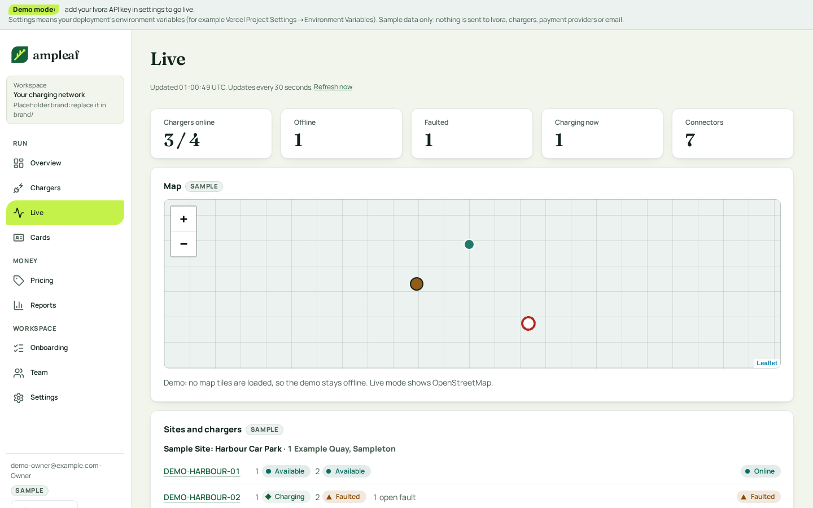

1. Live
The Live screen becomes a monitoring page: a faults banner with a next step, a status summary strip that doubles as filters, a dense table beside the map, and remote actions on the selected charger.

What changes and why
- Faults move to the top as one banner with a link to the charger, not a section below the list (an operator with many chargers looks for problems first).
- Summary strip counts double as status filters; the table gets search, site filter, sort and a sticky header (the template shows cards only).
- Map sits beside the list on desktop and below it on a phone; marker shapes repeat the status.
- Remote actions (reset, unlock, start) live in a panel for the selected charger, each with a one-line consequence and a confirmation.
- Live is read-only monitoring, so it has no primary action in the header.
Follows
- Squid: host dashboard cards (status, one clear next action per property) and its empty and error states.
- Adapted for many chargers: a table with filters where Squid has cards. Dense-table look from the hosted Ivora dashboard (by look only).
Accessibility
- Text pairs are palette v2 pairs already checked at 4.5:1 or more in light and dark (tests/contrast.test.ts); no new pair is introduced.
-
Keyboard order follows the visual order: skip link, navigation,
page header, primary action, then content. Tabs use arrow keys;
table sort heads are buttons with
aria-sort. - Focus: the existing 3 px token ring on every control; tap targets 44 px (36 px on dense table actions, with 44 px on a phone).
- Status is a shape, a word and a colour; charts have a text equivalent.
Brand tokens
-
All colours from tokens; chips use
ok/warn/dangertints; lime marks charging only. - Map tiles stay configurable through MAP_TILE_URL as today.
Build size
M Table, chip set and summary strip are shared; the panel and banner are new. No API change.
Demo data only. Current screens are the shipped template's own screenshots (docs/screens).